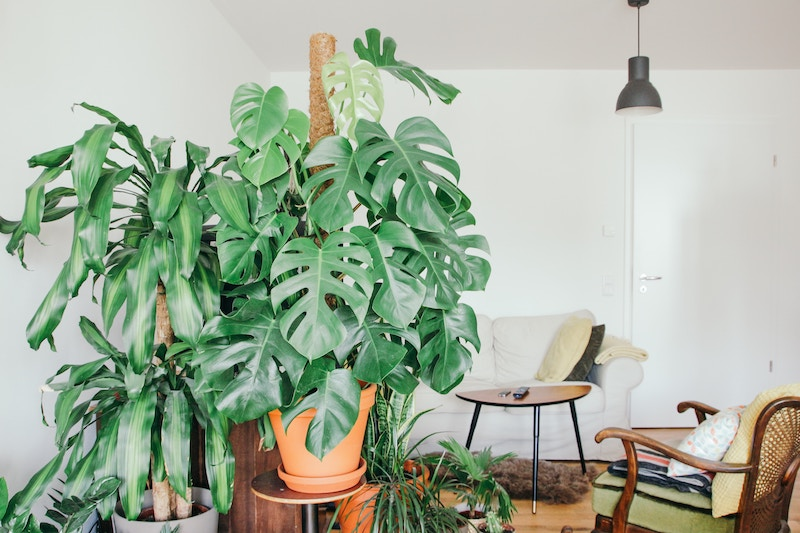

The Millennial generation is known for many things. But, one their most recognizable trends is a growing obsession with plants. Social media feeds have become forests of greenery with trendy pictures of houseplant purchases. For many Millennials, their houseplants take up a special place in their homes and hearts. Let's explore why that might be.
Source: Brina Blum via Unsplash.
According to the Garden Research from 2018, Millennials are more likely to grow herbs indoors than the Baby Boomers generation.
Aside from being trendy and providing something to care for, plants have many benefits, especially when brought into the home. According to a study from the Washington State University's Department of Horticulture and Landscape Architecture, a few benefits include improved air quality, boosted mood and increased productivity. Click on the icons below to learn more about these benefits.
Houseplants help freshen up the air quality in your home. Research has shown they suck out toxins that can pollute the air inside your home. Plus, plants release oxygen, so take a deep breath and appreciate those leafy friends of yours.
Various studies have shown that having plants in spaces such as offices, homes or buildings without windows have sparked happier moods. Having houseplants near may also reduce stress, which will definitely boost your mood.
When we feel most productive, we are able to focus on the task at hand without being weighed down by a tired mind. Plants actually help ensure this happens. According to data, the presence of plants resulted in a 12 percent faster reaction time leading to increased productivity.
Whether you're browsing options at your local Trader Joe's or visiting a farmers' market to choose your new green addition, it can be a bit overwhelming to choose the best pick, especially when they all seem like the cutest addition to any home. Here are a few options to consider. Hover over each image to find out more information about each plant.
Pantone's Color of the Year in 2017 was Greenery, and some speculate this could be because of the Millennial interest in plants.